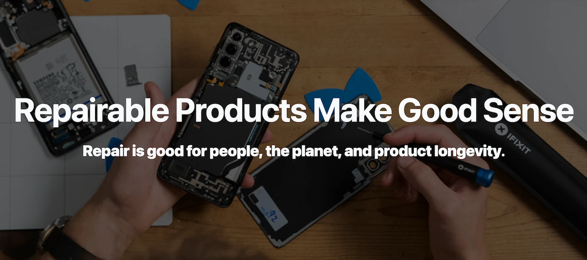
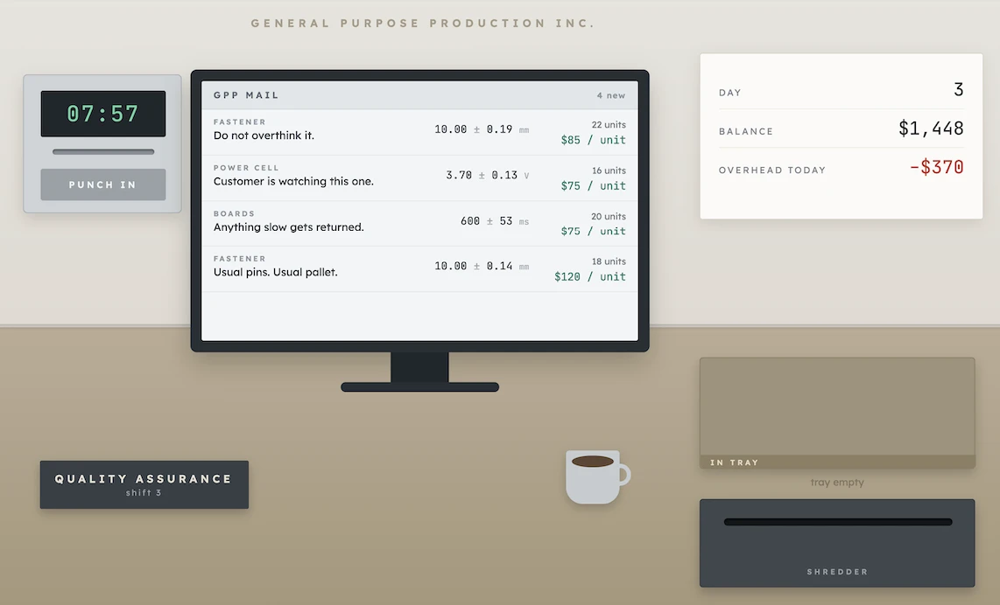

iFixit's Repairability Score
Turning "how hard is this to take apart" into a number manufacturers can't ignore.
Read case study →Guiding questionHow can the evolution of production systems transform the way products are designed and manufactured, and transform the efficient disposal of products?
DfM is where this course stops treating manufacture as something that happens to a design after it is finished. Every choice you make on a drawing has already committed somebody on a factory floor to a set of operations, a set of tools and a number of minutes per unit. A design that ignores this gets redesigned by the manufacturer, badly, without you.
Design for disassembly is the strategy worth caring about most and the one most often skipped. Design for process and design for assembly both pay off immediately in cost, so industry adopts them readily. Disassembly pays off at the end of a product's life, to somebody who is not the manufacturer, which is exactly why so many products are glued shut. That makes it the strategy where a designer's values show most clearly, and it links this topic straight back to C2.2 and C3.2. If you want a concrete way into this material, take something apart and count how many operations and how many separate materials stand between you and the battery.
A brilliant product that cannot be efficiently manufactured, assembled, repaired, or recycled is not a finished design: it is an expensive problem. Design for Manufacture (DfM) is the discipline of engineering manufacturability into a product from the very first sketch, ensuring that good design intentions survive contact with the factory floor, the repair bench, and the recycling facility.
DfM comprises three complementary strategies: Design for Process (optimising how a product is made), Design for Assembly (minimising assembly time and error), and Design for Disassembly (enabling repair, reuse, and recycling at end of life). Together these three strategies connect C4.1 to almost every other topic in the curriculum: from material selection to LCA to production systems.
Students must be able toOutline design for process, design for assembly and design for disassembly strategies.
Design for Manufacture (DfM) integrates manufacturing considerations into the earliest stages of product design. It is far cheaper to fix a manufacturing problem during the design phase than after tooling is built or production has started.
| Strategy | Focus | Key goal | Life-cycle phase |
|---|---|---|---|
| Design for Process (DfP) | How individual components are made | Reduce energy, waste, processes, and emissions during manufacturing | Production |
| Design for Assembly (DFA) | How components are joined into a product | Minimise part count; maximise assembly efficiency and error-prevention | Assembly |
| Design for Disassembly (DFD) | How components are separated at end of life | Enable repair, reuse, remanufacture, and recycling | End of life |
These three strategies are complementary but can sometimes conflict: a choice that optimises assembly (e.g., adhesive bonding) may hinder disassembly. Holistic DfM requires designers to balance all three throughout the design process.
Manufacturers may formalise DfM through quality management systems (ISO 9001) and environmental management systems (ISO 14001) to ensure consistent, measurable outcomes.
Students must be able toOutline the advantages of design for process and explain how a product could be designed using this strategy.
Design for Process (DfP) focuses on reducing the energy, material, processes, waste, and emissions involved in manufacturing individual components. Designers must understand the constraints and opportunities of each manufacturing process and design components that exploit process strengths.
DfP design guidelines:
Case study (Apple Unibody MacBook): The laptop body is CNC-machined from a single solid block of aluminium ("unibody"). This eliminates the need to join or weld multiple body parts together. Results: stronger and more rigid structure than multi-part assembly; finer tolerances; smooth, seamless finish; reduced assembly complexity. The trade-off: CNC machining removes 30–50% of the aluminium billet as waste swarf, but this is recyclable.

Measure products, test batteries, and pretend to have fun in this thrilling and somewhat stressful game.
Students must be able toOutline the advantages of design for assembly and explain how a product could be designed using the design for assembly strategy.
Design for Assembly (DFA) looks closely at how a product's components and sub-assemblies fit together, aiming to cut cost by trimming the part count and streamlining how efficiently the whole thing goes together. Fewer parts means faster assembly, smaller inventory, lower storage costs, and fewer potential failure points.
DFA principles:
| Principle | How to apply | Benefit |
|---|---|---|
| Reduce part count | Combine multiple components into single moulded or machined parts; eliminate redundant parts | Lower material cost; faster assembly; fewer failure points |
| Standardise fasteners | Use one screw size/type throughout; avoid custom fasteners | One tool needed; no mis-assembly risk from wrong fastener |
| Snap-fit and clip connections | Design press-fit or snap-fit joints that click into place without tools | Faster assembly; no fastener inventory; allows disassembly |
| Self-locating parts | Design parts that align themselves (symmetrical, keyed, or self-nesting) | Reduces jigs/fixtures; prevents mis-assembly; enables automation |
| Vertical axis of assembly | Design so all parts drop in from above; gravity assists alignment | Gravity-assisted; suits robotic assembly; faster cycle time |
| Modular design | Divide product into independent sub-assemblies that can be tested separately | Parallel assembly; easier repair/upgrade; mass customisation |
| Poka-Yoke (mistake-proofing) | Make incorrect assembly physically impossible (asymmetry, colour coding, keying) | Eliminates assembly errors; reduces rework and warranty claims |
Case study (Bosch circular saw redesign): Reduced from over 100 parts to dramatically fewer by combining components into single moulded parts, using snap-fit connections, self-locating symmetrical parts (preventing incorrect assembly), vertical axis of assembly (parts drop into place), and standard screws instead of custom fasteners.
Case study (IKEA furniture): Flat pack design minimises shipping volume; standardised cam-lock fasteners and dowels throughout the catalogue; symmetrical/reversible panels reduce assembly error; pictorial step-by-step instructions eliminate language barriers; modular units allow expansion and reconfiguration.
Poka-Yoke example (USB Type C, 2014): The connector is symmetrical: it can be inserted in either orientation. Previous connectors (USB-A, Micro-USB) were asymmetrical, causing frequent insertion errors. Symmetrical design prevents assembly errors entirely, speeds up manufacturing (robots don't need vision systems to detect orientation), and eliminates damage from forced insertion.
Students must be able toOutline the advantages of design for disassembly and explain how a product could be designed using this strategy.
Design for Disassembly (DFD) facilitates ease of repair, reuse, remanufacture, or recycling. It has become increasingly important as manufacturers must comply with WEEE (Waste from Electrical and Electronic Equipment) and RoHS (Restriction of Hazardous Substances) legislation in Europe and similar requirements globally, the same take-back legislation that underpins extended producer responsibility.
DFD design guidelines:
| Area | DFD guideline | Why it matters |
|---|---|---|
| Materials selection | Choose readily recyclable materials; minimise material diversity; use polymer identification codes (SPI codes); avoid composite laminates where possible | Single material types are easy to sort and recycle; mixed materials contaminate recycling streams |
| Fastening techniques | Eliminate/minimise adhesives and solvents; use thermoplastic adhesives (separable by heat); prefer snap-fits, clips, screws, bolts over welding, brazing, or soldering | Mechanical fasteners allow non-destructive separation; adhesives create permanent bonds that destroy components on removal |
| Component design | Prioritise ease of access for removal; standardise fasteners throughout; ensure all parts are accessible; label disassembly sequence and hazardous materials | Third-party recyclers and repair technicians need to understand the product; proprietary tools restrict access |
| Modularity | Group components of the same material together; design sub-assemblies that can be removed as a unit | Speeds disassembly; allows module replacement rather than full replacement |
Case study (Mongolian Yurt, traditional DFD): A portable dwelling built around a collapsible timber lattice frame wrapped in felt. It comes apart and goes back together by design, letting nomadic communities relocate easily. Timber lattice walls, roof poles, and felt panels can all be separated, packed on animals or vehicles, transported, and rebuilt without damage. An ancient example of DFD principles.
Case study (Smartphone, poor DFD): Modern smartphones present significant disassembly challenges:
Even with growing pressure to close the loop, most retired handsets are still put through the shredder, so only the higher-value metals get pulled out while the plastics and rare earths end up burned or buried.
Emerging solutions: Fraunhofer IFF's iDEAR project applies machine learning and computer vision to work out how to take a device apart automatically, and researchers are also trialling 3D imaging paired with targeted chemical dissolving to strip components off circuit boards. The Fairphone takes a different approach at the design stage itself, letting an owner swap out any major module with nothing more than a standard screwdriver.

Turning "how hard is this to take apart" into a number manufacturers can't ignore.
Read case study →Students must be able toDiscuss how designers use DfM strategies to reduce the environmental impact of the manufacture, use and disposal of products.
DfM strategies, when applied holistically, can simultaneously reduce cost, improve quality, and reduce environmental impact. These are not competing objectives: the same design decisions that make manufacturing more efficient often also reduce waste and energy consumption.
| DfM strategy | Environmental benefit | Mechanism / example |
|---|---|---|
| Fewer parts (DFA) | Less material extraction and processing; less energy in manufacturing | Bosch saw: fewer metal parts → less machining energy; less scrap |
| Single-component materials (DfP) | Easier end-of-life recycling; avoids contamination of recycling streams | Specifying PP (polypropylene) throughout a product rather than mixing PP, ABS and PC |
| Process substitution (DfP) | Reduced energy and emissions | Mechanical folding instead of welding saves electricity and eliminates weld fume emissions; punching produces recyclable blanks rather than mixed swarf |
| Snap-fits instead of adhesives (DFD) | Non-destructive disassembly enables repair and recycling | Product modules can be replaced individually; at end of life, materials can be separated without grinding |
| Modular design (DFA + DFD) | Extends product lifespan; reduces premature replacement waste | Replacing a broken display module rather than the whole phone; upgrading RAM in a laptop rather than buying new |
| Recyclable materials with identification codes (DFD) | Enables sorted material recovery; reduces landfill | SPI resin codes on polymer parts allow automated sorting at MRF (material recovery facility) |
| Waste minimisation (DfP) | Reduces landfill; conserves raw materials | Guidelines include "adopting designs that favour the efficient selection of materials, ease of assembly/disassembly, and repair, recovery and recycling" |
Potential conflicts and limitations:
The resolution is a holistic LCA-informed approach: evaluate environmental trade-offs across the full life cycle, not just at the manufacturing stage. Environmentally conscious design also enhances product appeal to eco-conscious consumers and improves brand reputation.
Ten questions covering the learning objectives for this topic. Select one answer per question, then click "Check all answers" to see your score and the explanations.
Design for Assembly (DFA): looks at how components and sub-assemblies go together, cutting cost by trimming part count and making the assembly process itself more efficient. Fewer parts → faster assembly, lower inventory, fewer failure points. Focus: beginning of product life. (1)
Example: The redesigned Bosch circular saw reduced from over 100 parts using snap-fit connections, self-locating symmetrical parts, vertical axis of assembly, and single moulded components instead of separate parts. (1)
Design for Disassembly (DFD): facilitates ease of repair, reuse, remanufacture, or recycling. Focus: end of product life. Driven by WEEE and RoHS legislation. Uses snap-fits/clips/screws instead of adhesives; standardised accessible fasteners; recyclable identified materials. (1)
Example: The Mongolian Yurt (a portable dwelling built around a collapsible timber lattice frame wrapped in felt), which nomadic communities can repeatedly take apart, transport, and rebuild without damaging any component. (1)
Key tension: what is quick to assemble (adhesive bonding) may be impossible to disassemble without damage. Holistic DfM must balance both.
Material complexity (up to 2 marks):
Joining techniques (up to 2 marks):
Laminated layers (up to 2 marks):
Consequence: Most smartphones are shredded at end of life, recovering only high-value metals while rare earths, plastics, and glass are lost. Emerging solutions (Fraunhofer iDEAR AI robotics; Fairphone modular design) offer partial remedies.
Definition: Poka-Yoke (Japanese: "mistake-proofing") is a design approach that makes incorrect assembly physically impossible or immediately detectable. The goal is to eliminate an entire class of errors rather than correcting them after they occur. (1)
USB Type C example: Previous USB connectors (Type A, Micro-USB) were asymmetrical: one correct orientation only. Users frequently attempted insertion upside-down, causing frustration, wasted time, and potential pin damage. The Type C connector is symmetrical: it can be inserted in either orientation without error, making incorrect insertion impossible. (1)
Importance for DFA (any 2 × 1 mark):
DfM strategies are not trade-offs between cost, environment, and quality: when applied correctly, the same decisions that reduce manufacturing costs often also reduce environmental impact and improve quality. (1)
Waste minimisation: Replacing welding with mechanical folding saves energy (no welding equipment), eliminates weld fume emissions (environmental), produces a joint that can be non-destructively disassembled (DFD benefit), and may produce a stronger, more consistent joint (quality). Snap-fit connections reduce part count (cost), eliminate adhesive waste (environmental), and allow repair or recycling (DFD). (1+1)
Material selection: Specifying single-component polymers (e.g., PP throughout) rather than mixed materials costs less to mould (bulk pricing, simpler tooling), is easier to recycle at end of life (no separation needed), and avoids compatibility problems in moulding (quality consistency). Using RoHS-compliant materials avoids regulatory fines (cost), prevents environmental contamination, and improves product safety (quality). (1+1)
Process substitution: Replacing drilling with punching is faster (reduces labour cost), produces cleanly recyclable blanks rather than mixed swarf (environmental), and achieves consistent hole quality (dimensional accuracy, quality). The Apple Unibody CNC approach eliminates joining operations (reduces assembly cost), produces a stronger, more rigid structure (quality), and generates recyclable aluminium swarf as the only by-product. (1)
Honest evaluation (conflicts): DFD may increase manufacturing cost (snap-fits over adhesives require tighter tolerances); materials chosen for lightweight performance (aluminium + steel composite bodies) may resist separation at end of life. However, these conflicts can be resolved through LCA-informed holistic design: the long-term environmental and brand benefits typically outweigh short-term cost premiums. (1)
Linking Questions